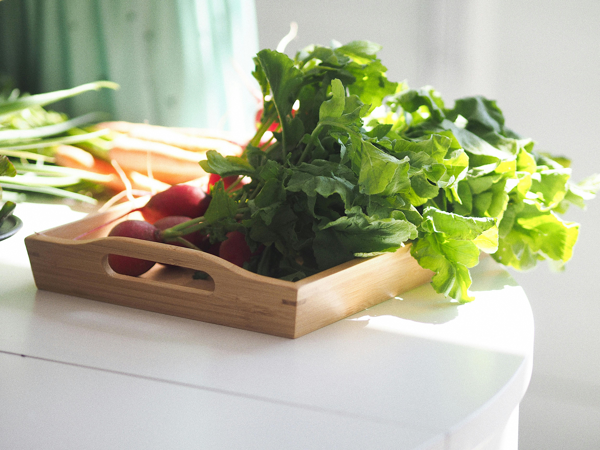

En nuestra consulta, nos enfocamos en brindarte una atención personalizada para mejorar tu bienestar a través de la alimentación. Ayudamos a nuestros pacientes a alcanzar sus metas de salud con planes alimenticios adaptados a sus necesidades y estilo de vida. Ya sea que busques perder peso, mejorar tu rendimiento físico o controlar una condición de salud, estamos aquí para guiarte en cada paso del camino hacia una vida más saludable. Descubre cómo una alimentación balanceada puede transformar tu bienestar y te acompañaremos en tu camino hacia una mejor calidad de vida.

Tomar agua es fundamental en una dieta balanceada, ya que ayuda a mantener el cuerpo hidratado y a regular funciones vitales. El agua facilita la digestión, favoreciendo la correcta absorción de nutrientes, y ayuda a eliminar toxinas a través de la orina y el sudor. Además, beber suficiente agua puede contribuir a la pérdida de peso, ya que reduce la sensación de hambre y mejora el metabolismo. También mantiene la piel saludable, ayuda en la circulación sanguínea y previene la retención de líquidos. Incluir agua en la dieta diaria es esencial para el bienestar general del cuerpo.
Las verduras son esenciales en una dieta equilibrada debido a su alto contenido de nutrientes y bajo aporte calórico. Ricas en vitaminas, minerales y fibra, las verduras ayudan a mejorar la digestión, fortalecer el sistema inmunológico y mantener una piel saludable. Además, son fundamentales para prevenir enfermedades crónicas como la obesidad, la diabetes y las enfermedades cardíacas. Al ser bajas en grasas y azúcares, contribuyen al control del peso y promueven la sensación de saciedad. Incorporar una amplia variedad de verduras en la alimentación diaria es clave para mantener un equilibrio nutricional y mejorar el bienestar general.
